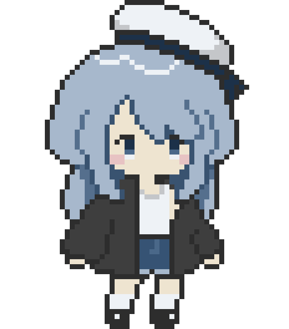
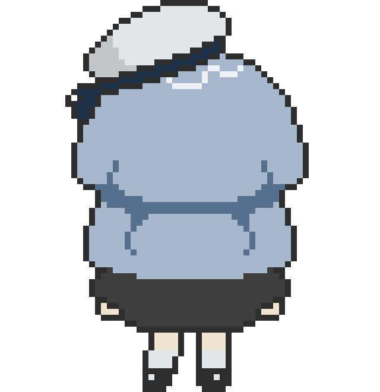
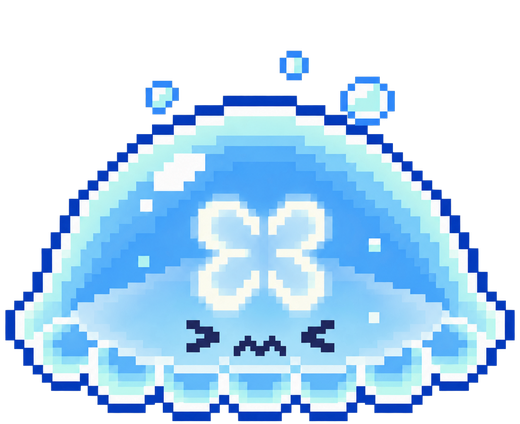
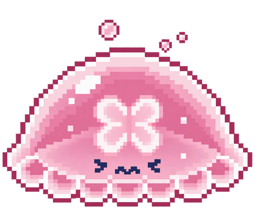
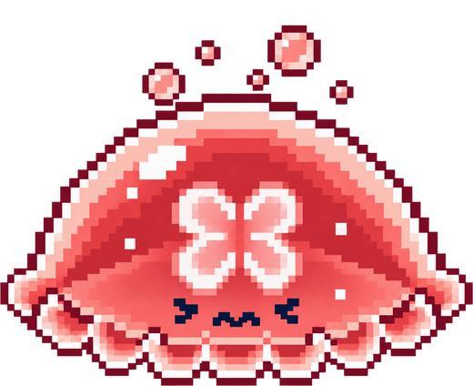
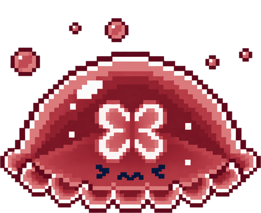
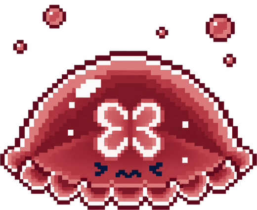
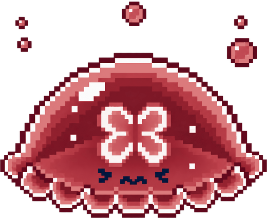
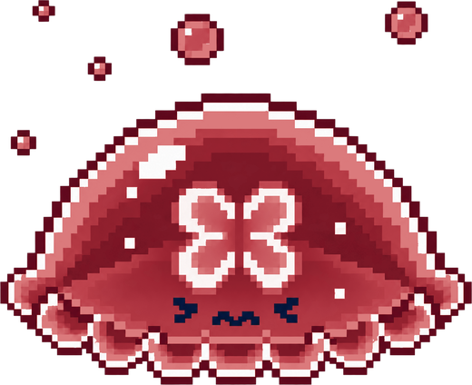

01 — Overview
Binari (비나리) is a macOS AI desktop assistant designed to support spontaneous idea development through Socratic conversation. Rather than requiring users to navigate to a separate application, Binari aims to provide an accessible thinking partner that helps capture unfinished thoughts, explore ideas, and organize them into actionable directions.
Alongside Binari, I am developing a separate jellyfish desktop pet focused on ambient interaction and character animation. Unlike Binari, the jellyfish does not use an LLM. Instead, it responds through predefined interactions and animated states, exploring how a small desktop character can create a sense of presence without demanding attention.
Although both projects explore companionship within the desktop environment, they approach it from different perspectives: Binari focuses on conversational assistance, while the jellyfish explores ambient presence and playful interaction.
Skills
02 — Goal
Design an ambient desktop assistant that helps users capture ideas and develop their reasoning with minimal interruption to their existing workflow. The experience centers on three principles:
- Immediate accessibility: Make conversational assistance available through a single interaction without navigating away from the current workspace.
- Thoughtful guidance: Use Socratic questioning to help users elaborate on their ideas rather than simply generating finished answers.
- Unobtrusive presence: Create a companion that remains visually engaging while respecting the user's attention and autonomy.
The long-term goal is to develop a lightweight environment where thoughts can be recorded, revisited, and progressively transformed into creative work.
03 — 비나리
The conversational half of the project. I am still deciding which AI to connect it to. Its face is hand-drawn pixel art, with a few silhouette-breaking details (the off-shoulder jacket, the long ribbon streamers) inspired by a jellyfish.



The Dock icon is the only show/hide control. The agent responds only when I open a chat, typed in Korean or English. I am still validating whether the face should roam the bottom of the screen and be draggable out of the way of content.
Reactive Core
No notifications, no nudges. It answers when the conversation opens and holds still otherwise.
Bilingual by Default
Korean-English text chat. Typing only, so it never listens in the background.
Session Memory
Chats are organized into projects and resume where I left off, with thread compaction for long runs.
04 — Jellyfish
A desktop pet with no LLM behind it. It responds through predefined interactions and animated states, so everything it does is drawn and designed by hand. It is still unnamed. Its motions are modeled on the behaviors of Comnyang, an existing pixel-cat desktop app, which I use as a reference for what a desktop pet can do. The jellyfish has its own body and its own way of moving.







One of the motion states, animated. The rest are still being drawn.
05 — Going Forward
The conceptual framework is set for both companions. The next phase moves from planning to execution: choosing the AI for 비나리, then building the chat interface, while the jellyfish's remaining motion states get drawn.